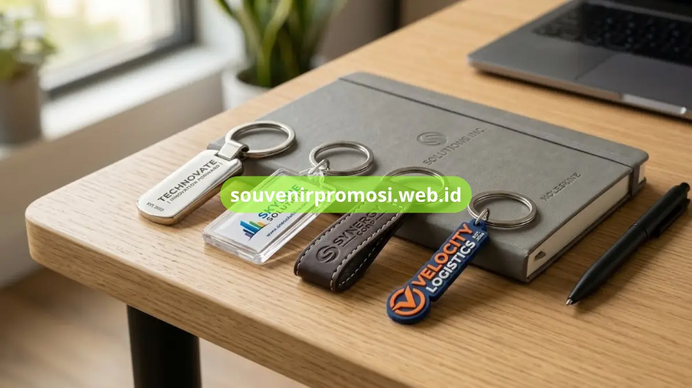

Spesifikasi bahan gantungan kunci promosi mencakup jenis material, ketebalan, tingkat kilap, dan metode cetak yang menentukan kualitas akhir serta daya tahan merchandise. Setiap bahan memiliki karakteristik teknis berbeda yang memengaruhi hasil visual logo perusahaan.
Poin Penting
- Akrilik tersedia dalam ketebalan 3mm hingga 5mm dengan pilihan transparan, doff, atau glossy.
- Logam kuningan dan stainless steel menawarkan bobot lebih berat dan tahan karat untuk penggunaan jangka panjang.
- Kulit sintetis memiliki tekstur permukaan yang dapat dipilih sesuai kebutuhan embose logo.
- Karet PVC fleksibel dan tahan air, cocok untuk merchandise dengan mobilitas tinggi.
- Setiap spesifikasi bahan dapat dikonsultasikan langsung di katalog Souvenir Promosi.
Daftar Isi
Spesifikasi Bahan Akrilik untuk Gantungan Kunci Custom
Bahan akrilik untuk gantungan kunci promosi tersedia dalam ketebalan standar 3mm, 4mm, dan 5mm, dengan pilihan permukaan transparan, doff, atau glossy sesuai desain logo. Ketebalan yang lebih besar memberikan kesan lebih solid dan tahan benturan ringan saat dibawa sehari-hari.
Cetak logo pada akrilik umumnya menggunakan metode UV print full color, sehingga gradasi warna dan detail kecil pada logo perusahaan dapat direproduksi dengan akurat. Bahan ini juga ringan sehingga cocok dikirim dalam jumlah besar tanpa menambah beban biaya pengiriman secara signifikan.
Berapa Ketebalan Akrilik yang Ideal untuk Merchandise Korporat?
Ketebalan 3mm umumnya cukup untuk gantungan kunci berukuran kecil hingga sedang, sementara ketebalan 4mm hingga 5mm direkomendasikan untuk desain berukuran lebih besar agar tidak mudah patah saat digunakan. Pemilihan ketebalan sebaiknya disesuaikan dengan kompleksitas bentuk logo perusahaan Anda.
Spesifikasi Bahan Logam Kuningan dan Stainless Steel
Gantungan kunci logam menggunakan bahan dasar kuningan atau stainless steel yang diproses melalui teknik ukir laser, etching, atau enamel warna. Kuningan memberikan warna keemasan alami yang elegan, sedangkan stainless steel menawarkan tampilan modern berwarna perak dengan ketahanan karat lebih tinggi.
Proses finishing logam dapat berupa polish glossy atau matte brushed, tergantung kesan visual yang ingin ditonjolkan pada identitas brand perusahaan. Bobot logam yang lebih berat dibanding akrilik atau karet memberikan kesan kualitas premium saat dipegang langsung oleh penerima.
Apa Perbedaan Utama Kuningan dan Stainless Steel?
Kuningan lebih cocok untuk kesan klasik dan elegan dengan warna keemasan khas, sementara stainless steel lebih tahan terhadap korosi dan cocok untuk penggunaan luar ruangan atau iklim lembap. Kedua bahan sama-sama mendukung teknik ukir detail logo yang presisi.

Spesifikasi Bahan Kulit Sintetis untuk Embose Logo
Kulit sintetis yang digunakan untuk gantungan kunci promosi biasanya memiliki tekstur permukaan pebble, saffiano, atau polos halus, tergantung kesan yang diinginkan. Teknik embose atau debose logo pada kulit sintetis menghasilkan efek timbul tanpa memerlukan tambahan warna tinta, sehingga tampilan lebih minimalis dan elegan.
Ketebalan kulit sintetis untuk merchandise umumnya berkisar 1,2mm hingga 1,5mm agar cukup kuat menahan bentuk saat dijahit atau dilipat menjadi gantungan kunci.
Spesifikasi Bahan Karet PVC untuk Gantungan Kunci 3D
Karet PVC untuk gantungan kunci promosi diproses melalui cetakan mold custom sesuai bentuk logo, menghasilkan efek timbul 3D yang detail. Bahan ini tahan air, fleksibel, dan warna tidak mudah pudar meski terpapar sinar matahari dalam penggunaan luar ruangan.
Karet PVC menjadi pilihan tepat untuk merchandise dengan mobilitas tinggi seperti souvenir event outdoor, komunitas, atau sponsor kegiatan lapangan yang membutuhkan daya tahan cuaca.
Bagaimana Menentukan Bahan Sesuai Kebutuhan Katalog Perusahaan?
Penentuan bahan gantungan kunci promosi sebaiknya mempertimbangkan jumlah pesanan, anggaran, dan kesan visual brand yang ingin dibangun, karena setiap bahan memiliki keunggulan spesifikasi teknis yang berbeda. Tim Souvenir Promosi dapat membantu menyesuaikan spesifikasi bahan dengan kebutuhan katalog perusahaan Anda secara langsung.
Setiap bahan gantungan kunci promosi, mulai dari akrilik, logam, kulit sintetis, hingga karet PVC, memiliki spesifikasi teknis yang memengaruhi hasil cetak logo dan daya tahan produk. Memahami spesifikasi ini membantu perusahaan menentukan pilihan yang paling sesuai dengan kebutuhan branding dan anggaran.
Lihat detail spesifikasi lengkap setiap bahan dan dapatkan penawaran harga terbaik dengan mengunjungi katalog Souvenir Promosi di souvenirpromosi.web.id atau hubungi tim kami untuk konsultasi bahan sesuai kebutuhan perusahaan Anda.